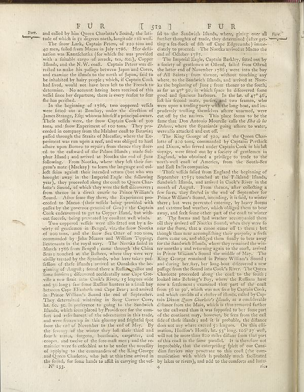

Scan ID britannica:309f765b1ecc83e0a7f7762e44b4a927a7555443:train:220
Image SHA-256 f28b3445b2354a93e2efbd2647cb2058637dea9d7c095bb9c2e239624ac95565
Status: ok. Running header: none (none). Removed page furniture: Page-footer: No 133..
PDF · raw Parse reply · LaTeX
Entries: E0005

| # | Class | Box | Parse 3.5 | Used text | Source |
|---|---|---|---|---|---|
| 0 | Section-header | [0.1318, 0.057, 0.7803, 0.0766] | FUR TST FUR | FUR [512] FUR | super_vl |
| 1 | Text | [0.1328, 0.0758, 0.5049, 0.1062] | and called by him Queen Charlotte’s Sound; the latitude of which is 51 degrees north, longitude 128 well. | and called by him Queen Charlotte's Sound, the latitude of which is 51 degrees north, longitude 128 west. | super_vl |
| 2 | Text | [0.1338, 0.107, 0.5068, 0.2617] | The flower bark, Captain Peterty of 2oz ton and 40 men, failed from Macao in July 1786. Her left- nation was KamelChalke (for which die was provided with a finished cover of arreak, tea. Ke), Copper Illands and the M.W. one. Captain Peterter who are refited to make his pafage between Japan and Corea, and examine the illands as the north of Japan had its he inhabited by her people which, if Captain Cook had lived, would not have been left to the French to determine. No account during here received of this veffi face her departure, there is every reason to fear the has purified. | The snow Lark, Captain Peters, of 220 tons and 40 men, sailed from Macao in July 1786. Her destination was Kamtschatka (for which she was provided with a suitable cargo of arrack, tea, &c.), Copper Islands, and the N. W. coast. Captain Peters was directed to make his passage between Japan and Corea, and examine the islands to the north of Japan, said to be inhabited by hairy people; which, if Captain Cook had lived, would not have been left to the French to determine. No account having been received of this vessel since her departure, there is every reason to fear she has perished. | super_vl |
| 3 | Text | [0.1348, 0.2625, 0.5039, 0.5625] | In the beginning of 1986, two copoped veffils were fitted out at Bombay, under the direction of James Savage. Five whawas himself providing the "thefe veffils were, the town Captain Cook of 5oz tons, and: how Experiment of 1oz tons." They proceeded in company from the Malahar, waar to Barstu pulled through the Shein of Matamily, where the Ex-periment was an upon a reef, and was obliged and almost upon Borno to repairs from hence they have ed. to the callward of the Palma Ilands; made sul-phur Ilands) and arrived at Noxeka the end of June following. From Noxeka, where they tell their first gene | In the beginning of 1786, two coppered vessels were fitted out at Bombay, under the direction of James Strange, Esq; who was himself a principal owner. These vessels were, the snow Captain Cook of 300 tons, and snow Experiment of 100 tons. They proceeded in company from the Malabar coast to Batavia; passed through the Straits of Macassar, where the Experiment was run upon a reef, and was obliged to haul ashore upon Borneo to repair; from thence they steered to the eastward of the Paloes Islands; made Sulphur Island; and arrived at Nootka the end of June following. From Nootka, where they left | super_vl |
| 4 | Text | [0.1357, 0.5633, 0.5059, 0.932] | Two copped veffels were alfo fitted out by fe-ery of gentleman in Brugal for the four Noxeka of 2oz ton, and the flow Sea Otter of 1oz tons, commanded by John Maxwell and William Tipping, historicness in the royal many. The Noxeka field in March 1786 from Brugal ; came through the China Seats touted at the Bullers, where they were very easily tracked by the Spanish, who have taken pok fell offion of thefs ilands; arrived at Oonabka the begining of August; found there a Ruflanphalton and former fireers, discovered naturally near Cape Greville a new fruit into Cookie River, 15 legacies wide and | Two coppered vessels were also fitted out by a society of gentlemen in Bengal, viz. the snow Nootka of 200 tons, and the snow Sea Otter of 100 tons, commanded by John Meares and William Tipping, lieutenants in the royal navy. The Nootka sailed in March 1786 from Bengal; came through the China Seas; touched at the Baffles, where they were very civilly treated by the Spaniards, who have taken possession of these islands; arrived at Oonalaska the beginning of August; found there a Russian galliot and some furriers; discovered accidentally near Cape Greville a new strait into Cook's River, 15 leag | super_vl |
| 6 | Text | [0.5127, 0.0773, 0.8809, 0.1437] | fid to the Sandwich Illands, where, giving over all further thoughts of trade, they determined (after getting a fees-flock of fifth off Cape Edgecumbe) immediately to proceed. The Noxetka arrivedat Macno the end of October 1787. | fell to the Sandwich Islands, where, giving over all further thoughts of trade, they determined (after getting a sea-fleet of fish off Cape Edgecumbe) immediately to proceed. The Nootka arrived at Macao the end of October 1787. | super_vl |
| 7 | Text | [0.5146, 0.1445, 0.8799, 0.3406] | The Imperial Eagle, Captain Barkley, fitted by a factory of gentleman in Olson, failed from Othera the latter end of November 1786; went into the bay of All States’s from themes, without touching any where, or the Sandwich Illands, and arrived in Nova ka the beginning of June 5 from theme to the fourth, as far as 1297 by in which faces to different forms good and spacious hairbon. In the last of 49° 60 folhis female mate, purifier, and two females, who were open a trading game with the long boys, and in producing trilling themselves adhere unarmed, were cut off by the native. This place them a | The Imperial Eagle, Captain Barkley, fitted out by a society of gentlemen at Olend, sailed from Olend the latter end of November 1786; went into the bay of All Saints; from thence, without touching any where, to the Sandwich Islands, and arrived at Nootka the beginning of June; from thence to the fourth, as far as 47° 30', in which space he discovered some good and spacious harbours. In the lat. of 47° 46', lost his second mate, purser, and two seamen, who were upon a trading party with the long-boat, and imprudently trusting themselves ashore unarmed, were cut off by the natives. This place s | super_vl |
| 8 | Text | [0.5156, 0.3414, 0.8818, 0.4297] | The New George of 520 and the Queen Charlotte of 20 tons, commanded by Captain Portlock and Dixon, who forced under Captain Cook in his left voyage, were fitted out by a variety of gentlemen in England, who obtained a privilege to trade to the workwell south of America, from the South-Sean and East India companies. | The King George of 320, and the Queen Charlotte of 200 tons, commanded by Captains Portlock and Dixon, who served under Captain Cook in his last voyage, were fitted out by a society of gentlemen in England, who obtained a privilege to trade to the north-west coast of America, from the South-Sea and East India companies. | super_vl |
| 9 | Text | [0.5166, 0.4289, 0.8828, 0.9313] | Thick veffish filed from England the beginning of September 1785; touched at the Pikshini Ilands, Sandwich Illands, and arrived in Cook's River in the month of Augest. They filtered in the end of September for Past. They filtered at the end of September for Prince William's Sound, including, it said to winter there; but was never protected criterion by her form and courses bad weather, which obliged them to bear away, as if both force other part of the court is winner as "The Renard and hahe weather compared them till they arrived off Noxeka Sound, when they were to raise the flows, that a cau | Thofo vessels sailed from England the beginning of September 1785; touched at the Falkland Islands, Sandwich Islands, and arrived in Cook's River in the month of August. From thence, after collecting a few furs, they fleered in the end of September for Prince William's Sound, intending, it is said, to winter there; but were prevented entering, by heavy forms and extreme bad weather, which obliged them to bear away, and seek some other part of the coast to winter at. The forms and bad weather accompanied them till they arrived off Nootka Sound, when they were to raise the slows, that a cause so | super_vl |
Britannica scans: National Library of Scotland, CC0 1.0. Wikipedia text: Wikipedia contributors, CC BY-SA 4.0, revision links on each page. Generated 2026-10-18T13:26:14+00:00.